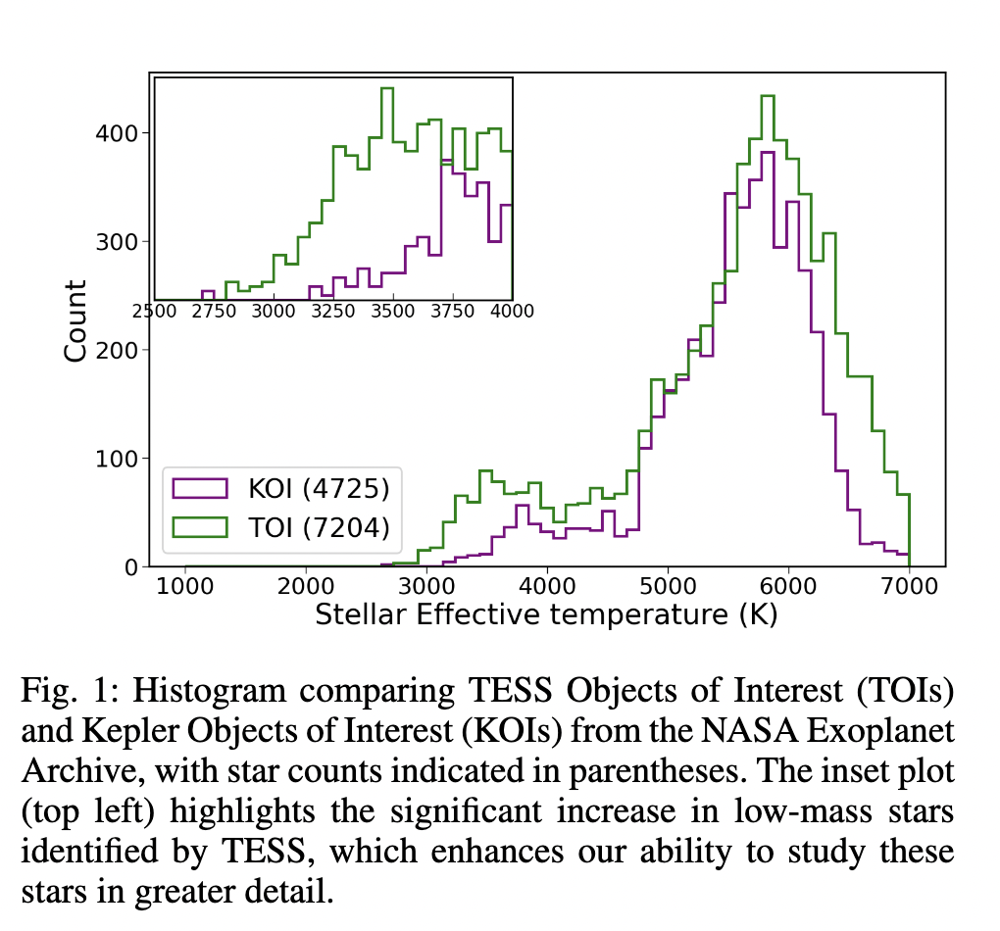
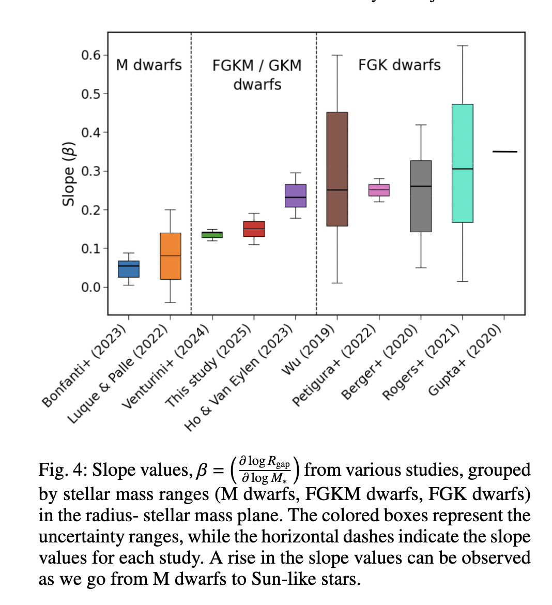

Exoplanet Demographics
I study population-level properties of exoplanets around low-mass stars, using data from the
Transiting Exoplanet Survey Satellite (TESS) mission
to better understand planet formation and evolution.
Project 1:
Exploring the Radius Valley Among the Lowest-Mass Stars with TESS
Low-mass stars provide a valuable opportunity to study the formation of Earth analogs and super-Earths. The Kepler survey discovered that M dwarfs host more small transiting planets compared to sun-like stars. Exoplanet demographics provided evidence for the photoevaporation of atmospheres of close-in planets, revealing a radius valley in the distribution of exoplanets around sun-like stars. The Transiting Exoplanet Survey Satellite(TESS) mission, with its sensitivity to redder wavelengths, has observed ten times more low-mass stars, significantly enhancing planet detections around M dwarfs.
In my research, I used the TESS Objects of Interests (TOI) planet candidates and the Gaia DR3 updated stellar parameters from the Bioverse catalog to characterize the planet radius distribution and discover the radius valley among the M dwarfs. I also discovered that the radius valley shrinks to a smaller radius with decreasing stellar mass, consistent with Kepler observations. This linear dependence between the planet size and its host star suggests that the mechanisms shaping the radius distribution of planets around FGK stars, such as photo-evaporation or core-powered mass loss, also extend to M dwarfs.
The detection of the radius valley around lower mass M dwarfs allows for a more detailed analysis of the scaling relation between the radius valley and stellar mass. We find evidence for a flatter scaling than predicted by photo-evaporation models, and more consistent with pebble accretion models that include exoplanet water worlds. These results indicate that low mass stars provide an excellent testing ground for testing different mechanisms of planet formation.


Exoplanet Atmospheres
I dealt with telluric corrections using Molecfit and PCA to analyze a rocky exoplanet atmosphere.
Link to poster
Exoplanet Detections
I worked with Prof. Andrés Jordán and Prof. Rafael Brahm on the charecterisation of a warm
Neptune using TESS and radial-velocity follow-up (A Warm gIaNts with tEss colloboration).
You can download my CV here:
View CV